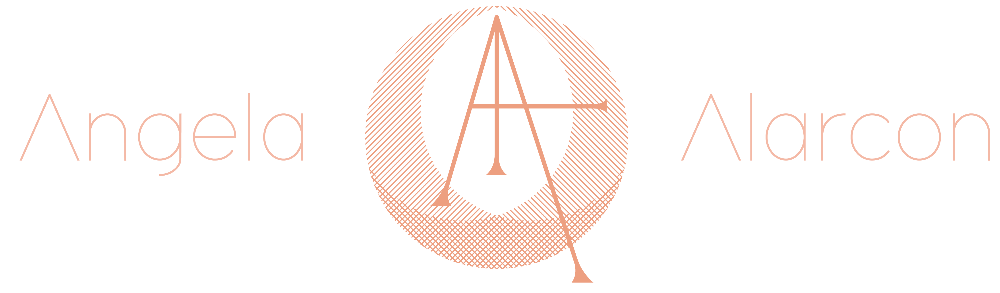

Au • ra
noun | au·ra | \or-ə\
a distinctive atmosphere around a given source; an energy field that is held to emanate from a being
The Concept
High Spirits is a wearable device designed as jewelry and accompanied by an app. Built into the piece of jewelry is a stack of biosensors that measure skin conductivity, temperature, and humidity. These parameters are collected within the app and translated into colors rendered on top of a selfie. This device is inspired by the Nikola Tesla’s experiments on energy discharge and Semyon Kirlian’s camera that measured this phenomenon.
{kind=link}
Inspiration
This concept is very much inspired by metaphysics, New Age sensibilities, and a fascination with all things unseen– including auras! Are they real or not? If energy exists, why can’t it have color?
Aura cameras already exist in niche events and trade shows but it requires a huge set up. High Spirits was created to be handy, beautiful and wearable and to use our own unique energy as artistic expression.
(Photo by Christina Lonsdale of Radiant Human for GOOP)
Making the Wearable
App Mockup
Please visit Among Strangers to see the full project live.
To see my entire process, please download the PDF here.